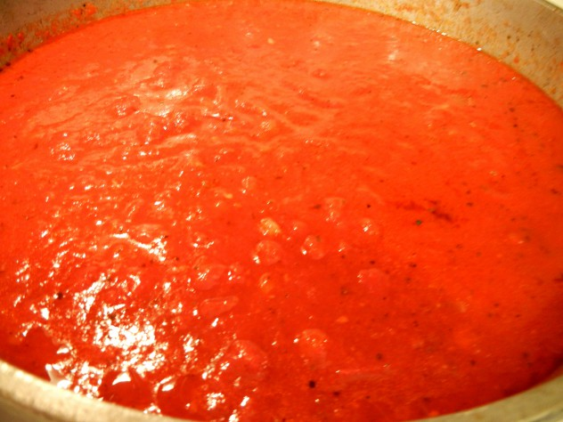

Sauce/Sugo
Ingredients
- 1 1/2 Tbsps olive oil
- 1 onion,chopped very finely
- 1 garlic clove, chopped very finely
- 2 13 oz cans Italian tomatoes, chopped
- 1/4 cup fresh basil leaves
- salt and pepper to taste
Directions
- Heat the oil in a large frying pan.
- Add the onion and cook over medium heat until softened.
- Stir in chopped tomato and simmer for 5 to 7 minutes, or until the sauce has reduced slightly and thickened.
- Season with salt and freshly ground pepper. Stir in the basil leaves and cook for another minute.
- Pour the sauce over the warm pasta and gently toss through.
- Serve immediately.
- This is a sauce suitable for serving with freshly grate Parmigiano cheese.